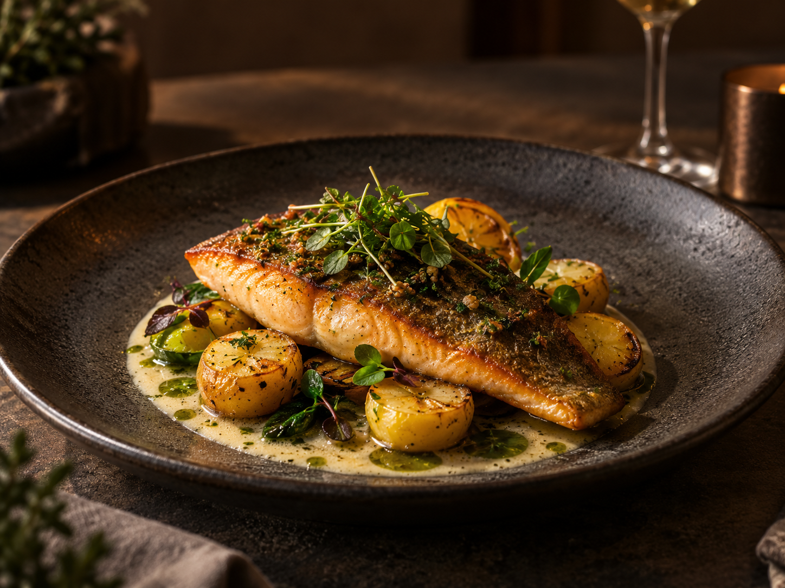
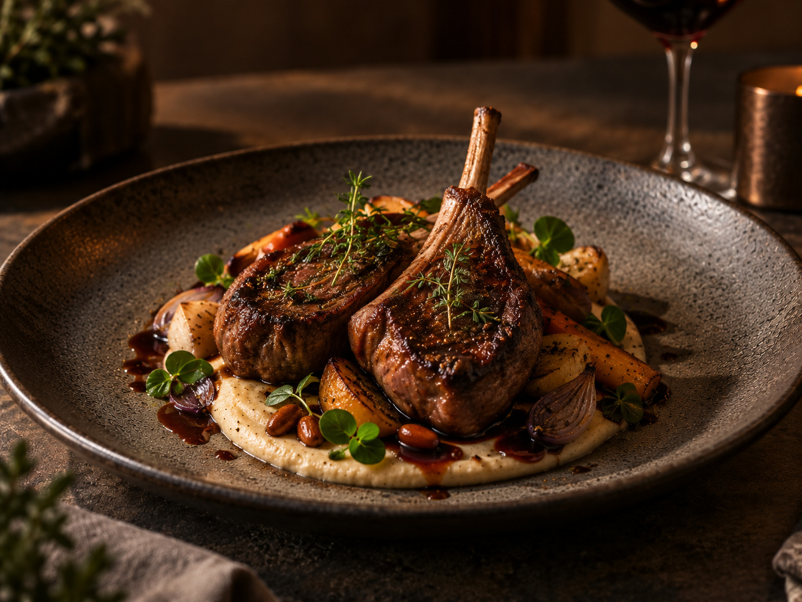
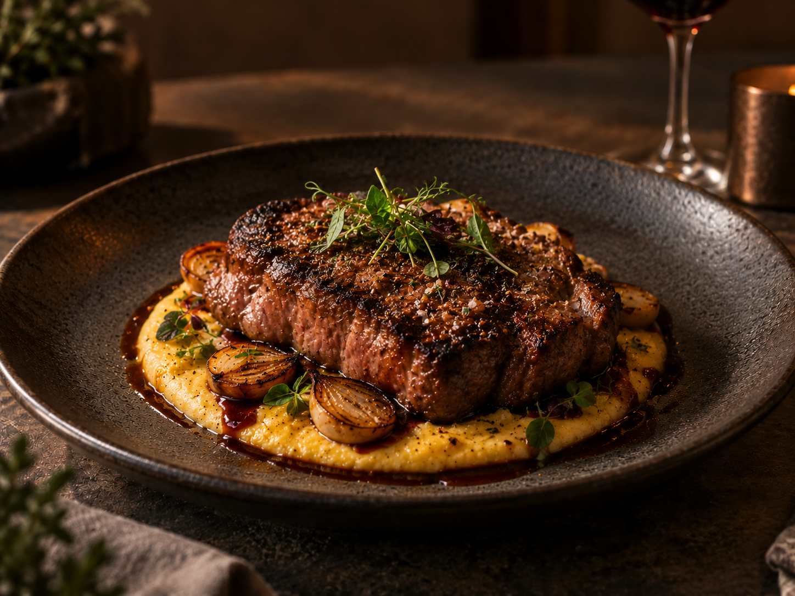
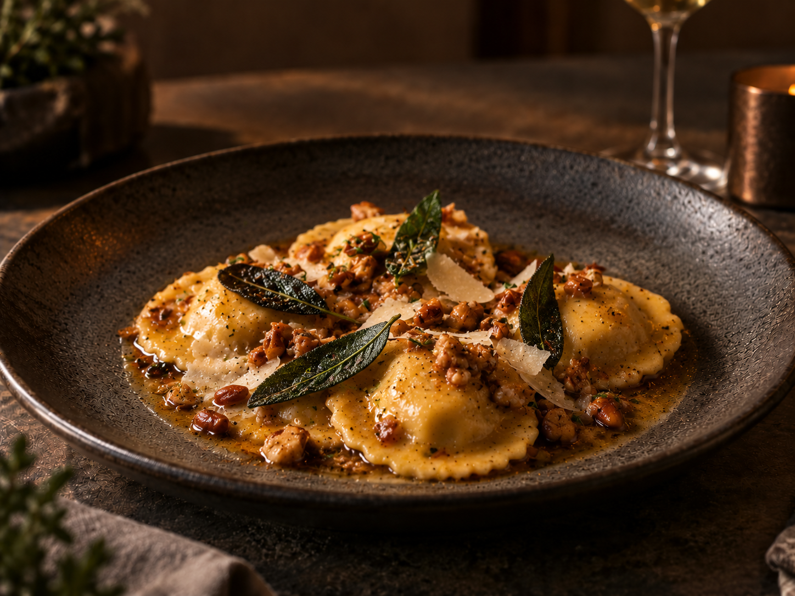
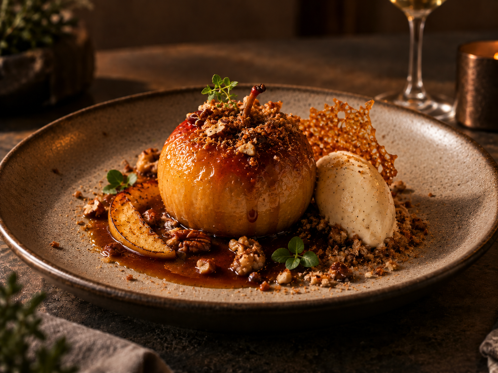
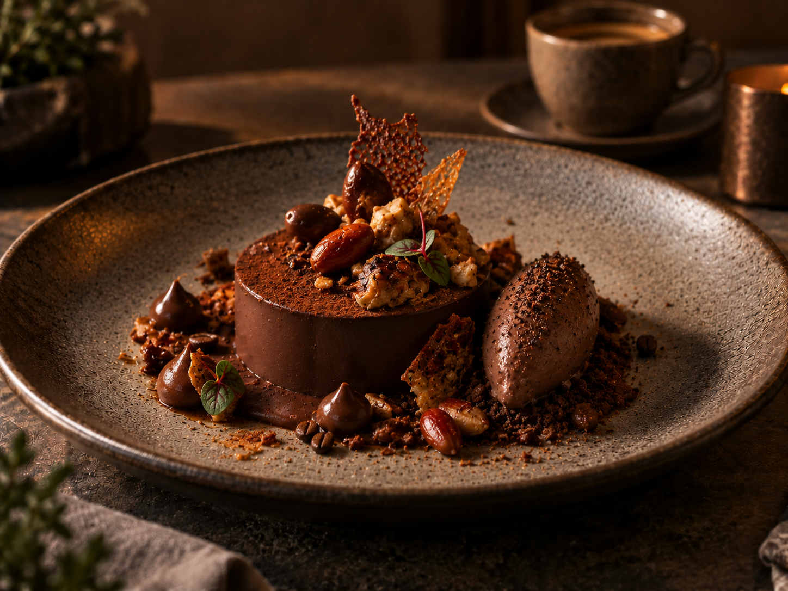
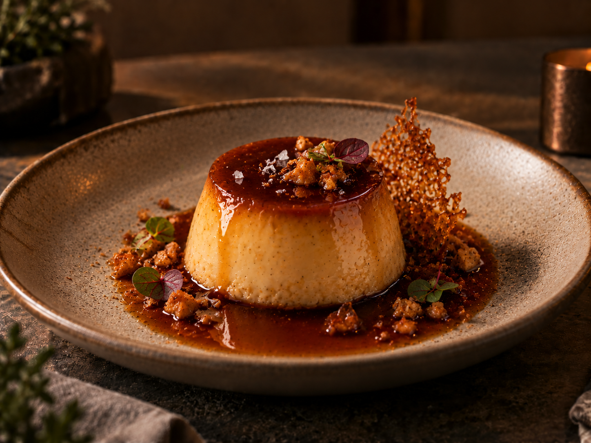

Truta da Serra
Truta grelhada, beurre blanc de erva-mate, batatas douradas e ervas frescas.
01
Nossa cozinha nasce da paisagem que nos cerca. Ingredientes locais, produtores próximos e referências brasileiras são transformados com simplicidade, técnica e respeito à estação.
Conheça nosso menu ↓
Truta grelhada, beurre blanc de erva-mate, batatas douradas e ervas frescas.
01
Cordeiro assado lentamente, purê de pinhão, raízes tostadas e jus de vinho tinto.
02
Arroz arbóreo, cogumelos da serra, queijo serrano e manteiga de ervas.
03
Entrecôte grelhado, creme de milho tostado, cebolas caramelizadas e molho de vinho.
04
Massa fresca, queijo serrano, pinhão, manteiga noisette e sálvia.
05
Maçã assada, caramelo de mel, creme de baunilha e crocante de castanhas.
01
Chocolate 70%, café brasileiro e praliné de pinhão.
02
Pudim de leite, caramelo de rapadura e flor de sal.
03
Mousse de queijo serrano, goiabada artesanal e mel local.
04
Crémeux de erva-mate, limão-siciliano e merengue tostado.
05